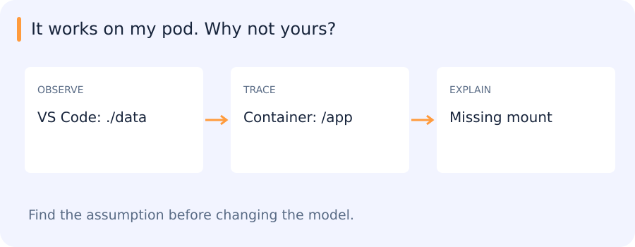

You have a Python program that reads shapes from a file and writes an image. Another researcher checks out the same code and gets a file error. To reproduce the run, you need to identify the current directory, interpreter, packages and mounted data that surround the code. This chapter follows those pieces from a local process to a container.
Jump to a concept
From an experiment to a reproducible program
A research result depends on code, inputs, configuration and execution environment. A notebook output without these cannot establish which experiment produced it. Begin by locating the working directory, interpreter, imported package and input path. Relative paths resolve from the process working directory, not necessarily from the script's directory. A script that works only because an IDE silently changes that directory has an undeclared dependency.
Linux and process boundaries
Two terminals, two different worlds
You run a script in VS Code and it reads its images. You paste the same command into a terminal on the pod and it reports that the directory is missing. Start by asking where each command ran and what directory it started in. A relative path such as data/input.png starts from the process's working directory, which can differ from the directory that contains the script.
A program in execution is a process. It inherits a working directory and a set of environment variables from the program that launched it. Run pwd and inspect the interpreter path in both terminals before touching Python code. If one terminal is inside a container, check whether the input directory was mounted into that container. The same path string can point into a different filesystem.
Git, an environment lock file and an input manifest each answer a different question. Git can show which source you ran. The lock file records package versions. The manifest can tell you which inputs you actually used. If two runs disagree, checking each one separately gives you a much smaller problem to debug.
A filesystem contains directories and files addressed by absolute or relative paths. Learn to inspect and navigate with pwd, ls, cd, cat and a text search tool. Standard input, standard output and standard error are distinct streams. A pipe connects output to the next process's input; redirection writes a stream to a file. Check exit status as well as printed text: a program can print a warning and exit successfully or print nothing and fail. Permissions control reading, writing and execution. Environment variables are inherited by child processes and are strings, so configuration needs parsing and validation.
A process has its own address space; a terminal is just one way to interact with it. A tmux or screen session lets a long-running terminal task survive a disconnected client, but does not make the task restart after a machine failure. Know how to inspect processes, interrupt a job, read logs and distinguish a running process from a completed result. Avoid treating missing output as evidence of success.
Follow a relative path across two launches
Imagine a script at /work/renderer/render.py that opens data/shape.json. Launching it while the shell is in /work/renderer usually resolves that relative path to /work/renderer/data/shape.json. Launching the same script from /tmp resolves it under /tmp. The file containing the Python code has not moved. The process started with a different working directory.
Before changing the parser, inspect the working directory, the exact input path, and the interpreter used to run the script. An explicit argument for the input path makes the interface easier to reproduce. A clear error can report the resolved path, which turns an apparently mysterious missing file into a question about what was provided to the process.
The same reasoning extends to a pod. A path inside a container refers to its own view of the filesystem. A file on the developer machine is available to the process only if it was included or mounted through the environment. Check the path from inside the running process's environment.
Self-check
A script opens data/input.json. You launch it from /tmp without changing directories. Where does Python look first?
- A. Beside the script automatically
- B. In the Git root automatically
- C. /tmp/data/input.json
- D. Beside the Python executable
Show answer and explanation
C. /tmp/data/input.json
A relative path resolves against the process working directory. The script's location matters only if the program explicitly builds a path from it.
Git as an experiment record
A commit records a tree of tracked files plus metadata and parent history. The working tree contains your current files; the staging area selects the next commit. A branch is a movable reference to a commit; HEAD identifies the current checkout. Inspect git status and git diff before staging, and inspect the staged diff before committing. A local commit is not yet a remote backup. Fetch updates your view of the remote; merging combines histories and may require resolving conflicting edits. Resolve a conflict by understanding the intended behavior on both sides, then rerun the relevant example.
Use small feature branches and reviewable merge requests for exercises. Keep datasets, checkpoints, generated environments and credentials out of source history. Record their locations and checksums separately. To reproduce a result, check out the commit and load the matching configuration and model artifact, rather than assuming the current branch is equivalent.
Python execution and program design
Python executes code through an interpreter and normally compiles source to bytecode internally. Dynamic typing means names refer to objects whose types are known at runtime. Assignment binds a name; it does not copy an object. If two variables refer to one list, mutation through either is visible through both. Prefer explicit inputs and return values to hidden mutable global state. Functions isolate behavior; modules organize related behavior; classes combine state with operations when an object's lifecycle matters.
Use exceptions for failed operations with useful context. A broad exception handler that returns an empty list can turn a failed image read into an apparently valid negative prediction. Validate file formats, coordinate systems and required fields at the boundary. Context managers close files even on exceptions. Iterators and generators support streaming, avoiding a full in-memory list when handling large data. Write docstrings for assumptions that types cannot express, such as units, array layout or whether a box endpoint is inclusive.
Environments, Docker and deployment
A virtual environment isolates Python packages. Pip installs packages; uv manages environments and resolved dependencies. Conda is another environment/package system that appeared in the legacy material; this project's supported route is uv. Select the actual pod interpreter in VS Code and inspect where imports come from. A lockfile makes dependency selection repeatable; it does not include datasets or pretrained weights.
A Docker image is a layered filesystem and execution specification. A container is an instance with its own running processes and writable layer. Mount persistent data explicitly: deleting a container can remove unmounted results.
Build context determines what a Dockerfile can copy. A published port and a process listening on the expected interface are both needed for access. Compose describes connected services for local work; an OpenShift Deployment manages replicas, a Service provides an internal address and a Route exposes the chosen service. Check readiness, requests, logs and a real response instead of equating an accepted manifest with a working deployment.
When the same code runs in a different environment
The shape parser runs correctly from VS Code. Inside the container, it fails to find its input. Nothing in the parser changed: ./data now refers to a different directory, and the file may not be mounted there at all.

This is an easy failure to misdiagnose as a Python problem. The program depends on more than its source files: its working directory, interpreter, packages and mounted data all affect what it does. Reproducing the run means making those dependencies explicit.
Following one input from the terminal into the container gives the Linux, Git and environment concepts below a concrete purpose.
Self-check
Your container starts, but a model file exists only on the host and was neither copied nor mounted. Which change makes it available at runtime?
- A. Switch Git branches
- B. Restart the same container without a mount
- C. Change the host's current directory
- D. Mount the model at the path the process reads
Show answer and explanation
D. Mount the model at the path the process reads
The process reads its own filesystem view. An explicit mount makes the host file available at a known container path.
Following the shape parser through a real run
The shape-rendering capstone provides a small version of the same problem: a file is parsed, validated, turned into geometry and rendered. Running a new valid input and a malformed input reveals whether those responsibilities are actually separated. The later SAM2 service adds a container and network boundary around similar application logic. The assignments retain their manual-work requirements; understanding the path is the common thread.
Original source references and provenance
Original teaching text covering the cited topics, not a verbatim mirror. These references are provenance; no external reading is required to use this chapter.
- http://python-3-patterns-idioms-test.readthedocs.io/en/latest/Factory.html
- https://docs.python-guide.org/writing/style/
- https://docs.python.org/3/library/xml.etree.elementtree.html
- https://docs.python.org/3/tutorial/
- https://www.atlassian.com/git/tutorials/learn-git-with-bitbucket-cloud
- https://www.katacoda.com/courses/docker
- https://www.tutorialspoint.com/python/index.htm
- https://www.tutorialspoint.com/unix/index.htm